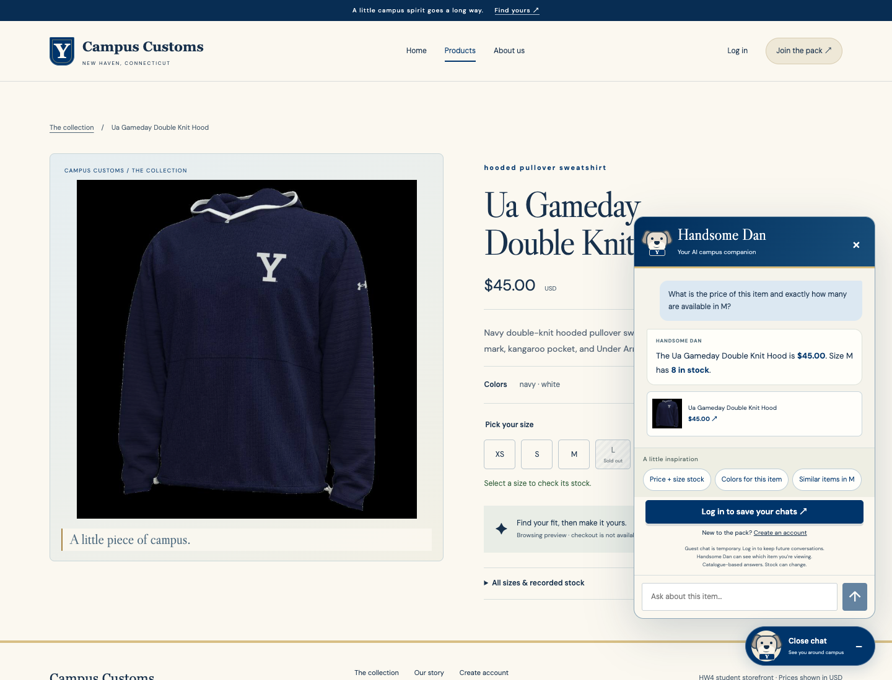
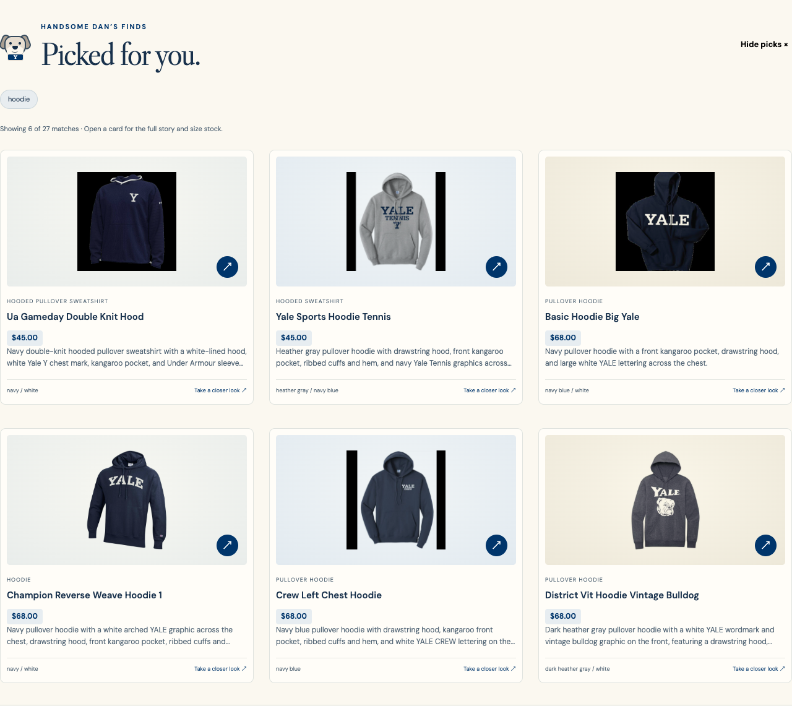
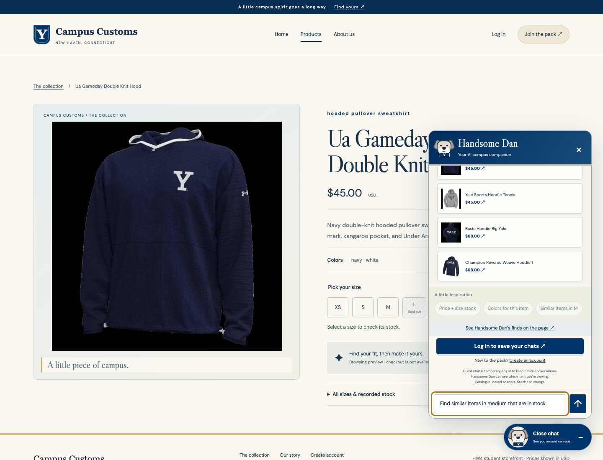

Three screenshots from the running shop. Chat answers came from the live agent; the price, stock, and product cards were checked against the local catalogue API.
Check 1 · Inventory truth
Handsome Dan checks the item’s price and size stock
Asked about the Ua Gameday Double Knit Hood, the live chat reported $45.00 and 8 in size M, matching the product’s recorded database fields. The screenshot shows the shopper’s question and the answer beside the actual product detail page.

Check 2 · Chat search
A hoodie question adds matching product cards to the page
After “What hoodies do you have?”, the page displayed six cards from 27 catalogue matches, each with an image, name, price, and short description. The live check compared every displayed card to the catalogue API.

Check 3 · P9 usability
A page-specific starter creates an editable question
On a product page, the Similar items in M button filled the chat box with “Find similar items in medium that are in stock.” It did not send automatically, so the shopper can edit the question before sending.
